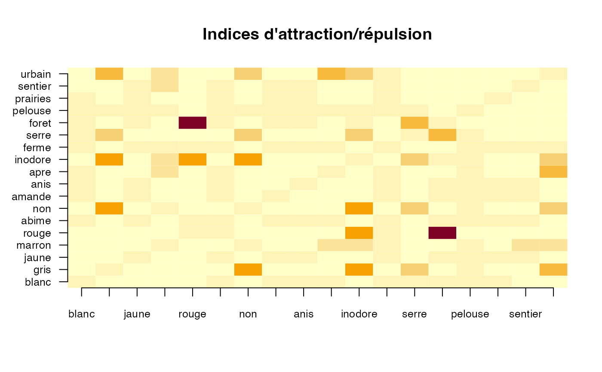

Fonction de calcul et de représentation des indices d'attraction/répulsion
att_rep_ind(data)Jeux de données
Liste à un élément qui content le tableau croisé des indices.
data(champignons)
champ_sel <- champignons[,c("couleur_chapeau","contusions","odeur",
"espacement_lamelle","habitat")]
sageR::att_rep_ind(champ_sel)

#> $out_ind
#> blanc gris jaune marron rouge abime
#> blanc 1.0000000 0.00000000 0.0000000 0.0000000 0.000000 1.13045360
#> gris 0.0000000 1.00000000 0.0000000 0.0000000 0.000000 0.02683051
#> jaune 0.0000000 0.00000000 1.0000000 0.0000000 0.000000 1.26103405
#> marron 0.0000000 0.00000000 0.0000000 1.0000000 0.000000 0.82991130
#> rouge 0.0000000 0.00000000 0.0000000 0.0000000 1.000000 1.26103405
#> abime 1.1304536 0.02683051 1.2610340 0.8299113 1.261034 1.00000000
#> non 0.5002430 4.72813239 0.0000000 1.6515959 0.000000 0.00000000
#> amande 1.1392740 0.00000000 1.4701268 0.5357826 0.000000 1.26103405
#> anis 1.1534939 0.00000000 1.5104390 0.4578755 0.000000 1.26103405
#> apre 1.2472445 0.00000000 0.0000000 2.4719289 0.000000 1.26103405
#> inodore 0.4561687 4.40528634 0.0000000 1.8261230 4.405286 0.11110432
#> ferme 0.9676558 0.61323522 1.1101327 1.0442774 1.253133 1.12671338
#> serre 1.1277755 2.52791237 0.5649214 0.8250825 0.000000 0.49941942
#> foret 1.2426036 0.21276596 1.1411411 0.7264957 10.000000 1.26103405
#> pelouse 1.0502318 1.10527770 0.9425009 0.9712510 0.000000 0.92803371
#> prairies 1.4592091 0.00000000 1.5218839 0.0000000 0.000000 1.26103405
#> sentier 0.0000000 0.00000000 1.4630015 2.1915407 0.000000 1.26103405
#> urbain 0.4895492 3.36751875 0.0000000 2.2136137 0.000000 0.48989812
#> non amande anis apre inodore ferme serre
#> blanc 0.5002430 1.1392740 1.1534939 1.247244 0.4561687 0.9676558 1.1277755
#> gris 4.7281324 0.0000000 0.0000000 0.000000 4.4052863 0.6132352 2.5279124
#> jaune 0.0000000 1.4701268 1.5104390 0.000000 0.0000000 1.1101327 0.5649214
#> marron 1.6515959 0.5357826 0.4578755 2.471929 1.8261230 1.0442774 0.8250825
#> rouge 0.0000000 0.0000000 0.0000000 0.000000 4.4052863 1.2531328 0.0000000
#> abime 0.0000000 1.2610340 1.2610340 1.261034 0.1111043 1.1267134 0.4994194
#> non 1.0000000 0.0000000 0.0000000 0.000000 4.4052863 0.5145715 2.9176831
#> amande 0.0000000 1.0000000 0.0000000 0.000000 0.0000000 1.1072457 0.5763263
#> anis 0.0000000 0.0000000 1.0000000 0.000000 0.0000000 1.1002208 0.6040783
#> apre 0.0000000 0.0000000 0.0000000 1.000000 0.0000000 1.2531328 0.0000000
#> inodore 4.4052863 0.0000000 0.0000000 0.000000 1.0000000 0.5796429 2.6606185
#> ferme 0.5145715 1.1072457 1.1002208 1.253133 0.5796429 1.0000000 0.0000000
#> serre 2.9176831 0.5763263 0.6040783 0.000000 2.6606185 0.0000000 1.0000000
#> foret 0.0000000 1.1641791 1.2202381 0.000000 0.8810573 0.2506266 3.9603960
#> pelouse 1.2756969 0.9497965 0.9340858 1.018589 1.1633007 0.9222190 1.3072736
#> prairies 0.0000000 1.5127980 1.4678949 0.000000 0.0000000 1.2531328 0.0000000
#> sentier 0.0000000 1.4159969 1.5644078 0.000000 0.0000000 1.2531328 0.0000000
#> urbain 2.9541584 0.0000000 0.0000000 3.808718 2.6938801 1.2531328 0.0000000
#> foret pelouse prairies sentier urbain
#> blanc 1.2426036 1.0502318 1.459209 0.000000 0.4895492
#> gris 0.2127660 1.1052777 0.000000 0.000000 3.3675188
#> jaune 1.1411411 0.9425009 1.521884 1.463001 0.0000000
#> marron 0.7264957 0.9712510 0.000000 2.191541 2.2136137
#> rouge 10.0000000 0.0000000 0.000000 0.000000 0.0000000
#> abime 1.2610340 0.9280337 1.261034 1.261034 0.4898981
#> non 0.0000000 1.2756969 0.000000 0.000000 2.9541584
#> amande 1.1641791 0.9497965 1.512798 1.415997 0.0000000
#> anis 1.2202381 0.9340858 1.467895 1.564408 0.0000000
#> apre 0.0000000 1.0185893 0.000000 0.000000 3.8087177
#> inodore 0.8810573 1.1633007 0.000000 0.000000 2.6938801
#> ferme 0.2506266 0.9222190 1.253133 1.253133 1.2531328
#> serre 3.9603960 1.3072736 0.000000 0.000000 0.0000000
#> foret 1.0000000 0.0000000 0.000000 0.000000 0.0000000
#> pelouse 0.0000000 1.0000000 0.000000 0.000000 0.0000000
#> prairies 0.0000000 0.0000000 1.000000 0.000000 0.0000000
#> sentier 0.0000000 0.0000000 0.000000 1.000000 0.0000000
#> urbain 0.0000000 0.0000000 0.000000 0.000000 1.0000000
#>